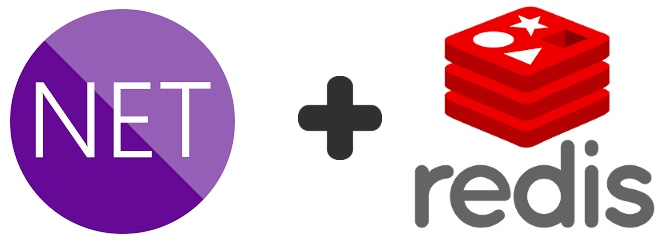
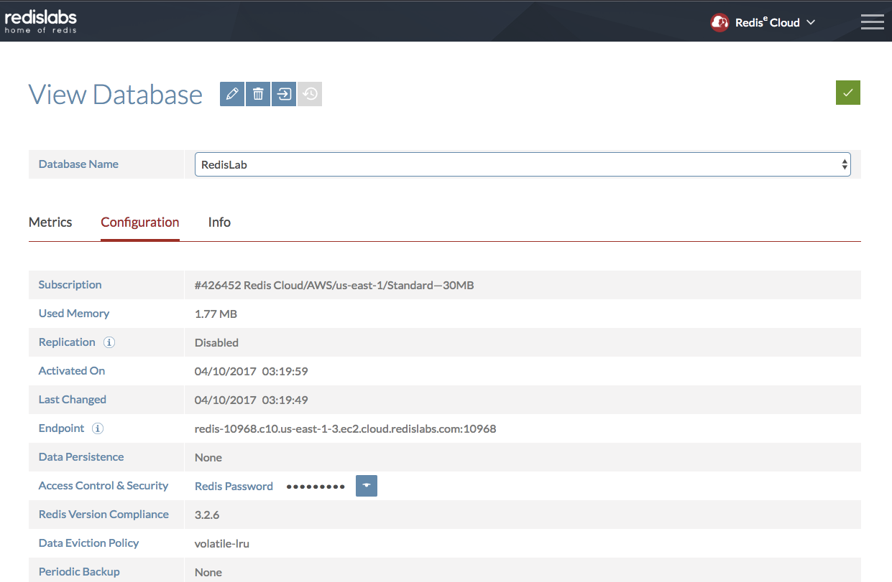

記錄如何使用StackExchange.Redis 取用Redis內的資料

StackExchange.Redis
StackExchange.Redis 是由Stack Overflow所開發維護的Redis Driver與Framework，它提供了我們有效且方便的介面去操作Redis資料．
官方提供兩個套件：
- StackExchange.Redis
- StackExchange.Redis.StrongName
如果你的專案本身屬於strong-named那就選後者吧．
對於Redis與如果想更進一步的認識可以參考先前整理的教學redis-tutoring，但比較可惜的不是專門為了ASP.NET Core所寫的教學，之後會有機會再更新整理與大家分享．
Hands On
這邊一樣我們透過dotnet new 指令幫我們建立classlib與xunit專案進行開發與測試
這邊可以參考前一篇ASP.NET Core play with Solution File使用.sln的方式將兩個專案關聯起來一起方便日後管理與還原
Create Redis Instance on RedisLabs
Redis Labs提供免費快速的建立雲端Redis Instance的服務．
這邊我們用Redis Labs幫我們快速建立一個Redis Instance，建立完成後Endpoint就是我們的連線資料，而Access Control & Security就是該Instance的Auth

Add StackExchange.Redis from NuGet Package Manager
接著我們使用先前介紹的NuGet Package Manager來幫我們載入StackExchange.Redis.
Setup up ConnectionMultiplexer and IDatabase
1 | ConnectionMultiplexer redis = ConnectionMultiplexer.Connect("<ip>:<port>,password=<auth>"); |
這邊要稍微注意一下，如果將ip換成domain的話會發生下面錯誤：
1 | Failed App.Test.UnitTest1.Test_SetValue |
發生的原因跟解決辦法可以參考[CoreCLR] Can’t connect to Redis server by hostname. Only by IP,但目前的最新ASP.NET的library依舊有這個問題，而StackExchange.Redis這邊也只能提供workaround跟送出RP給微軟做修補了．
StringSet
1 | bool isSuccess = <IDatabase>.StringSet(key,value); |
StringGet
1 | bool value = <IDatabase>.StringGet(key); |
Recap All
實務上我們要盡可能地重複使用已建立的連線，避免開過多連線造成資源浪費效能下降，所以這邊我們用Singleton Pattern將整個程式碼與測試程式碼重新整理如下:
MemberRepository.cs:
1 | using System; |
UnitTest1.cs
1 | using System; |